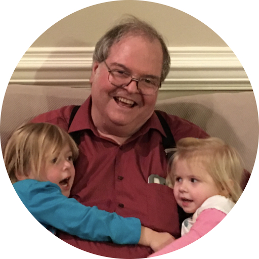

David Alan York passed away peacefully on June 26, 2025, at the age of 77 in San Jose, California. He was born on December 21, 1947, in Concordia, Kansas, to Charles and Regina York. David was a computer software engineer by trade and had a lifelong passion for aviation. He was a kind generous person who was always quick with a joke or funny story. He will be dearly missed. He was preceded in death by his parents, Charles and Regina York and wife Dianne Mills York. He is survived by his son Kenny (Kacey) York, brother Barry (Monika) York, sisters, Judy (Kent) Creekmore, Jill (Gammon) McClure, and Joyce (Jimmy) Higginbotham, and Grandchildren; Cora, Ada, Jezzia, and Zoi To honor David’s lifelong love of aviation, please consider making a donation to EAA’s Young Eagles program. We know he would appreciate supporting the next generation of pilots. https://www.eaa.org/eaa/apps/donations/donationye